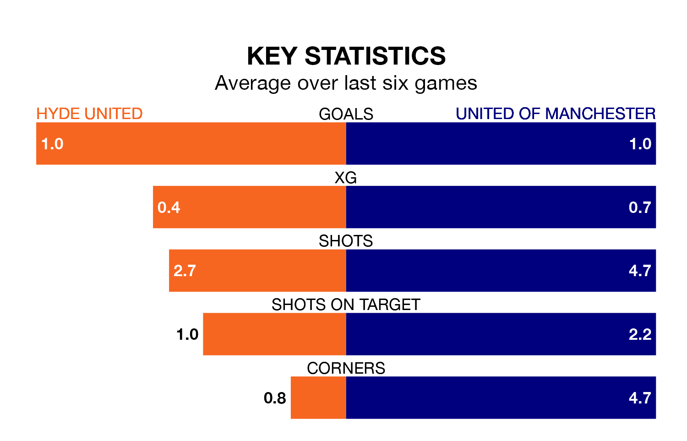

Hyde United are heavy favourites to keep all three points at home in Saturday's kick-off against United of Manchester.
Hyde, who sit fifth in the Northern Premier League with 38 games played, are priced at 1.3 to seal victory at Ewen Fields.
Sitting 10 places and 21 points behind them in the table, United of Manchester are 6.3 to win with *Betting Company*, while the draw is at 4.5.
With 48 goals in 35 games so far this season, United of Manchester are scoring at below the league average rate with 1.4 goals per game. And they are conceding more than average, letting in 68 goals at a rate of 1.9 per game.
Hyde, meanwhile, are above average scorers, with 1.7 goals per game, compared to a league average of 1.6. They have conceded 1.1 goals per game.
In the last 10 years, Hyde and United of Manchester have played each other on eight occasions. Hyde won five of them, United of Manchester one, and they drew twice.
On average, Hyde scored 2.0 goals and F.C. United 1.6 in those matches.
Their last meeting was on November 4, when Hyde won 2-0 away.
United are in mixed form in the Northern Premier League, with two wins and two draws from their last six games.
With two wins and four losses over that period, F.C. United's form is slightly worse – they have taken six points from 18, compared to the hosts' eight.
Hyde's last match was on Monday, a 3-1 loss against Macclesfield.
United of Manchester lost 2-0 against Ashton United last time out, also on Monday.
Updated: 16:41 (UTC), 04/04/24